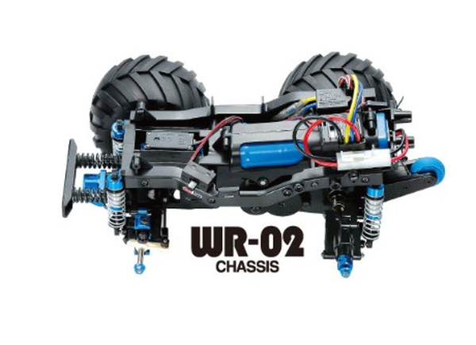

タミヤ WR-02

引用元画像：タミヤ公式サイト
📋 基本情報
| メーカー | タミヤ（Tamiya） |
|---|---|
| 機種名 | WR-02 |
| 型番 | 58242（ワイルドウィリー2） |
| 発売時期 | 1999年10月20日 |
| 価格 | 11,200円前後（現在の販売価格） |
| 生産状況 | 生産終了 |
| カテゴリー | ラジコンカー（1/10スケール 電動RCカー） |
| サブカテゴリー | コミカルRCカー（ウイリー走行） |
📏 シャーシスペック
| 全長 | 325mm |
|---|---|
| 全幅 | 272mm |
| 全高 | 270mm |
| 車体重量 | 1560g |
| タイヤ径 | 前後とも115mm |
| フレーム | モノコックタイプ |
⚙️ 駆動系
| 駆動方式 | 後輪2輪駆動（2WD） |
|---|---|
| デフギヤ | 3ベベルデフ（密閉式ギヤボックス内蔵） |
| モーター | 540タイプ |
| ギヤボックス | 密閉式、モーター装着状態で組み立て済み |
🔧 サスペンション
| 形式 | 4輪ダブルウィッシュボーン |
|---|---|
| ダンパー | フリクション（CVAオイルダンパー取り付け可能） |
| ステアリング | 等長2分割タイロッド式 |
💡 特徴
ウイリー走行特化シャーシ
- バッテリーを車体後部に縦置き搭載（重量物を高めに配置）
- 急発進するだけでダイナミックなウイリー走行が可能
- 転倒を防ぐローラー付きウイリーサポート装備
シンプルで組み立てやすい構造
- ビッグタイヤはホイールにはめ込み済み
- ギヤボックスはモーター装着状態で組み立て済み
- モノコックフレーム採用（軽量で高剛性）
高い走破性
- 直径115mmのビッグタイヤ装備
- 4輪ダブルウィッシュボーンサスペンション
- オフロードでもダイナミックな走行
派生モデル
- WR-02G（ビッグホイール仕様）
- WR-02C（オンロードタイプ、ホイールベース185mm）
- WR-02CB（コミカルバギー仕様）
🔧 ぽすとそに工房での修理実績
修理難易度
★★★★★（かなり古いシャーシなので、パーツが見つからない可能性もあります。）
よくある故障・注意点
- ウイリーバーの消耗や破損
- フレームの経年劣化
- サスペンションアームの破損
- パーツ入手が困難（生産終了から25年以上経過）
修理のポイント
- ウイリーバーのローラー部分の点検
- ギヤボックスの密閉状態確認
- フレームの歪みチェック
- デフギヤの動作確認
その他の特徴
- コミカルなドライバー人形付き
- ABS強化樹脂製ボディ
- スピンターンなどアクション走行が楽しめる